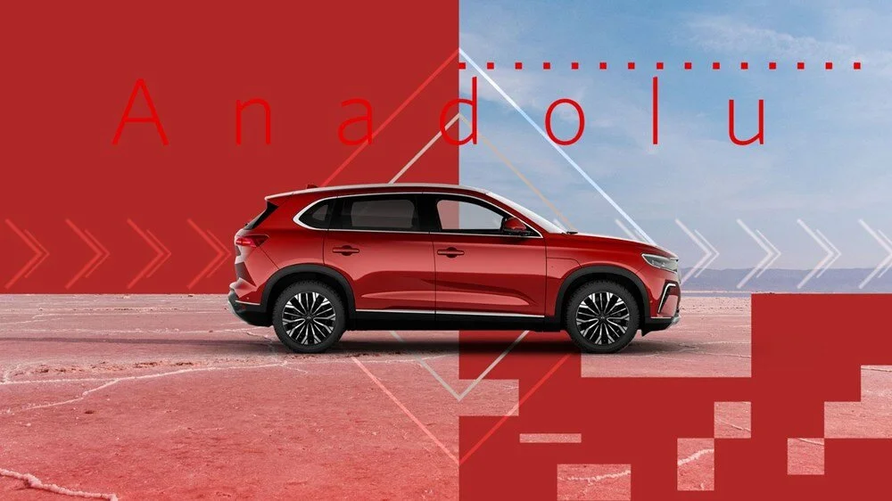

Anadolu topraklarındaki tutkuyu yansıtan kırmızı
Pamukkale travertenlerinin göz kamaştıran beyazlığı
Zeytin ağaçlarının gölgesindeki mavi su
Oltu taşının göz alıcı siyahlığı, parlak dokusu
Olağanüstü güzellikteki doğa harikası peri bacaları
Kayaçları ve vadileriyle milyonlarca yıllık geçmiş